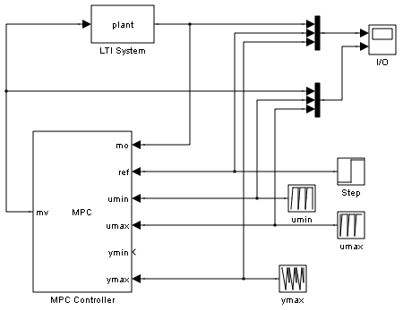
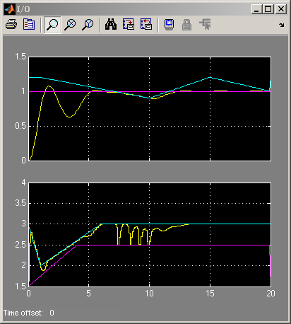

MPC with Variable Input and Output Bounds
Contents
This demonstration shows how to vary input and output saturation limits in real-time using Model Predictive Control Toolbox™.
Note: Possible limits specified in the MPC object are overridden by limit values fed to the MPC block (if left unconnected, the corresponding limit is considered unbounded).
MPC Controller Setup
if ~mpcchecktoolboxinstalled('simulink') disp('Simulink(R) is required to run this demo.') return end
Plant to be controlled and model used by MPC.
plant=tf(1,[1 .8 3]);
Define prediction and control horizons, sampling time, weights, input bounds.
p=10; % prediction horizon (take default one) m=4; % control horizon Ts=.1; % controller's sampling time
Set weights.
clear weights
weights.input=0;
weights.output=1;
weights.inputrate=0.5;
Set constraints.
clear mvconstraints
mvconstraints.RateMin = -10;
mvconstraints.RateMax = inf;
Create mpc object.
mpc1=mpc(plant,Ts,p,m,weights,mvconstraints);
Simulation Setup
Set output set-point.
ref=1; % Set simulation time. Tsim=20; % Open Simulink(R) Model. open_system('mpc_varbounds'); % Turn off input/output not connected warnings since they are irrelevant. set_param('mpc_varbounds','UnconnectedInputMsg','off') set_param('mpc_varbounds','UnconnectedOutputMsg','off') % Start Simulation. sim('mpc_varbounds');
-->Converting the "Model.Plant" property of "mpc" object to state-space. -->Converting model to discrete time. -->Integrated white noise added on measured output channel #1. -->The "Model.Noise" property of the "mpc" object is empty. Assuming white noise on each measured output channel. -->Converting the "Model.Plant" property of "mpc" object to state-space. -->Converting model to discrete time. -->Integrated white noise added on measured output channel #1. -->The "Model.Noise" property of the "mpc" object is empty. Assuming white noise on each measured output channel. 
bdclose('mpc_varbounds');